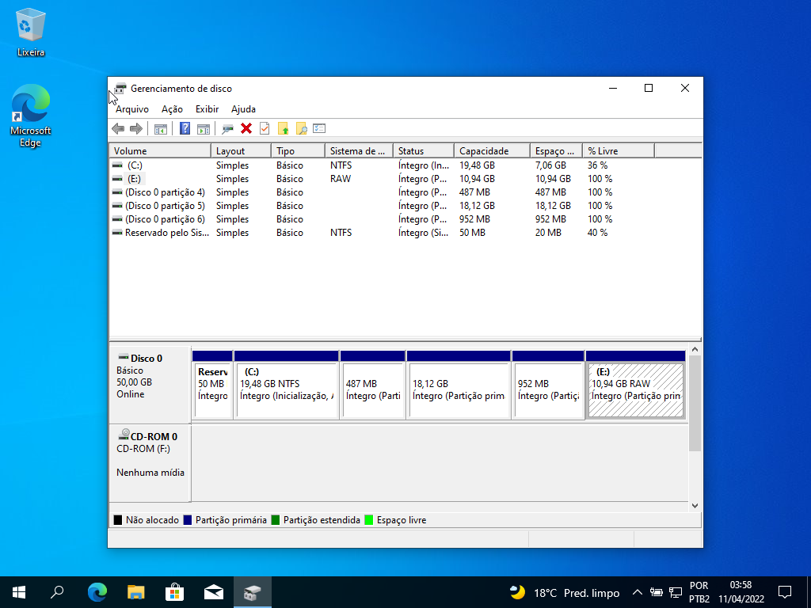
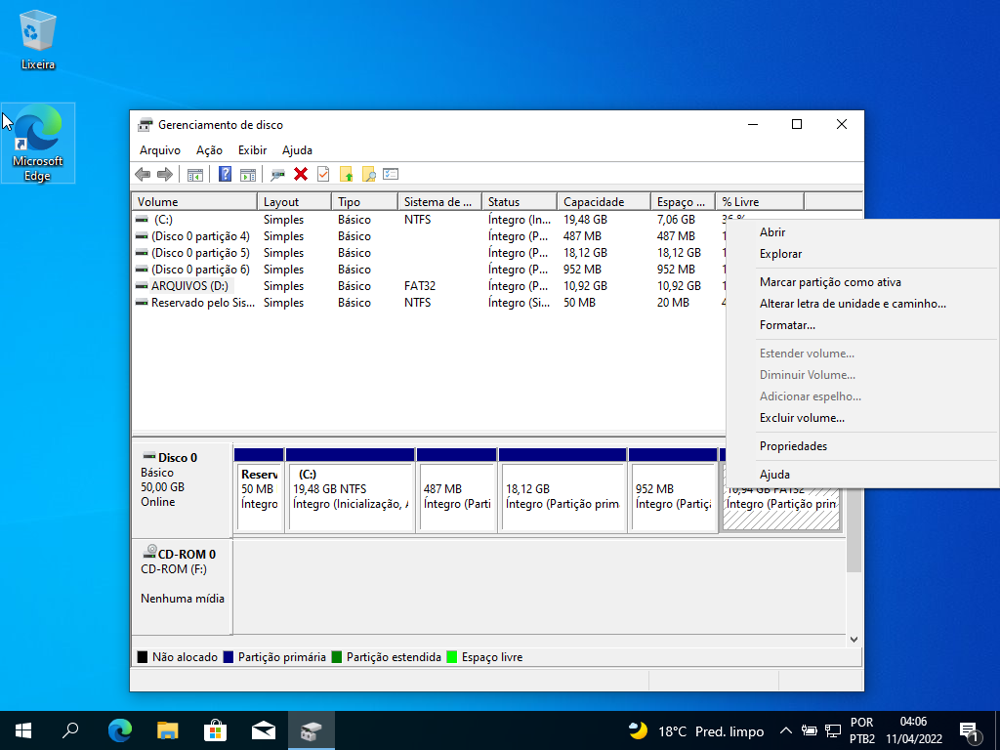
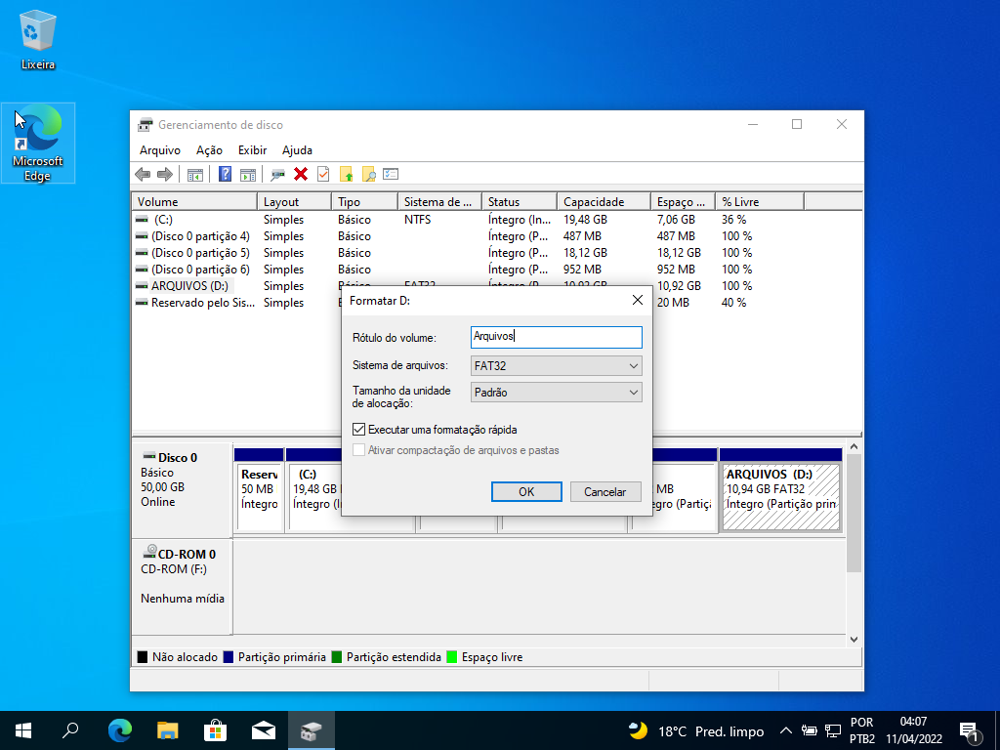
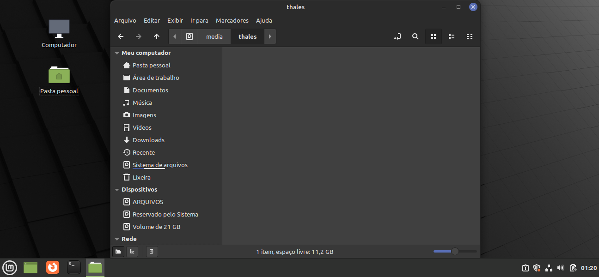

Como Configurar a Partição de Arquivos
Com o dual boot pronto chegou a hora de configurar a partição de arquivos que pode ser acessada a partir de qualquer SO. Ela vai ser feita a partir do próprio gerenciador de partições do Windows.
-
No menu iniciar procure por "Gerenciamento de disco" abra-o e procure a partição que você deicou para os arquivos. IMPORTANTE: CASO VOCÊ FORMATE A PARTIÇÃO ERRADA, PODE SER QUE O LINUX PARE DE FUNCIONAR E VOCÊ TENHA QUE FAZER O PROCESSO DE INSTALAÇÃO SO ZERO, POR ISSO CERTIFIQUE-SE DE SELECIONAR A PARTIÇÃO CORRETA ANTES DE FORMATAR!

-
Vista a partição correta, clique com o botão direito encima dela e clique em "Formatar..."

-
Feito isso, de um nome para sua partição, aqui eu dei o nome de "Arquivos", pore´m pode ser o nome de sua preferência em "Sistema de Arquivos" selecione "FAT 32" ou "exFAT" e clique em "Ok" e pronto sua partição de Arquivos estará criada.

-
Entrando no Linux podemos ver a partição de arquvios criada, você agora pode armazenar seus arquivos aqui e eles serão reconhecidos em ambos os Sitsemas Operacionais, semelhante a um pendrive.

Parabéns você fez o seu dual boot e sua partiçaõ de arquivos agora é só usar. Se você quiser formatar seu SO novamente não precisa apagar essa partição de arquivos é só instalar suas ISOs como quiser, mas isso é assunto para outro momento.